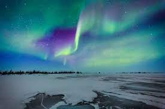
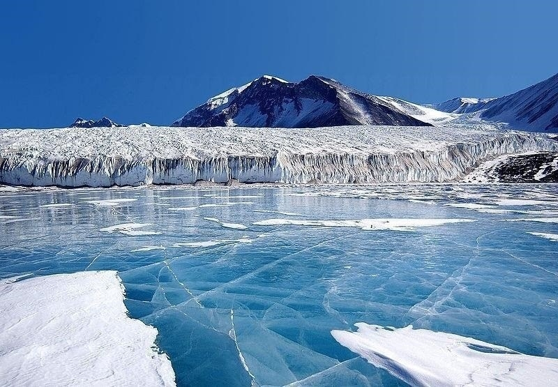

Un viaje helado unico te espera , disfruta de su fauna local , desplazandote de manera inusual y observando la maravilosa aurora boreal lo cual os dejara fastinado no pierdas la oportunidad de tu vida esto y mucho mas en tu viaje de ensueño de la antártida
|  |  |
Si bien existen registros de que los primeros avistamientos de la Antártida ocurrieron a comienzos del siglo xvi y, con más fuerza a partir del siglo xix, ya desde el siglo i, con la hipótesis del astrónomo Claudio Ptolomeo sobre la probable simetría de las masas terrestres conocidas hasta entonces, persistía la creencia en un vasto continente ubicado en el extremo sur del planeta, y referido en latín como «Terra Australis Ignota», o «Tierra desconocida del Sur», cuya existencia servía de "equilibrio" para las tierras septentrionales de Europa, Asia y África del Norte.